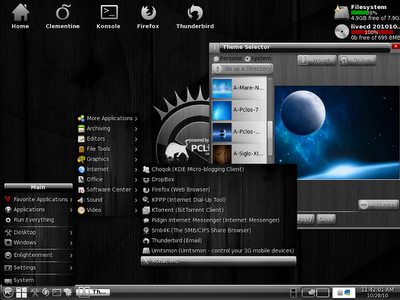
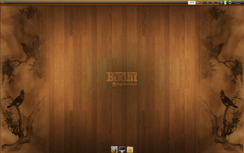
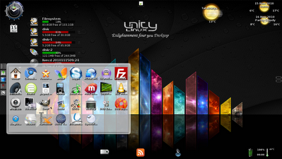
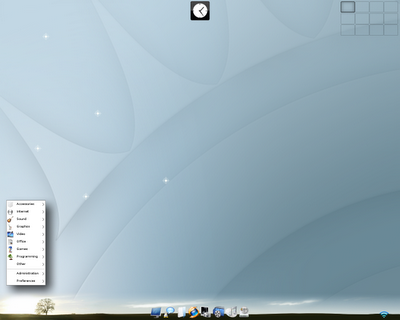
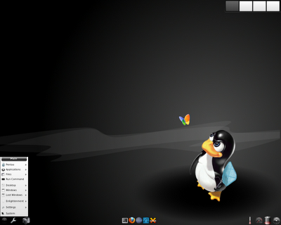
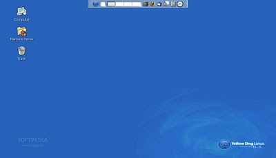

...making Linux just a little more fun!
Thomas Adam [thomas at fvwm.org]
Hi all,
[This might help drum up conversation here, if nothing else, but I appreciate it's not really Linux-centric.]
Some of you might recall some years ago the following:
http://linuxgazette.net/141/misc/lg/shuttle_sd39p2__should_i_buy_one.html
Unfortunately, said machine literally went up in white smoke just before Christmas. From what I can tell, an integrated circuit on the motherboard blew, as the PSU is still intact, according to my volt metre, as are the harddrives, etc. The point is, it's something esoteric, and not the usual suspects I would expect to have blown, else I could have replaced those parts.
However, because it's a Shuttle, replacing the motherboard outright is not
an option either, as it's an integrated system due to its cooling fans, etc.
Not to mention the apparent cost of doing so amounts to an equivalent cost
of the Shuttle overall.  Buying a new machine therefore seems logical.
Buying a new machine therefore seems logical.
So, would anyone be able to help me in replacing my Shuttle with a modern equivalent? When I say equivalent, I mean:
* Must be of a similar size to the Shuttle (form-factor). If this implies mini-itx, that's fine. * Should be as low-powered as possible -- i.e., not consuming the planet. Think green. * Would need space for at least two hard drives minimum. * Minimum of two PCI slots (one of which must be an PCI-e slot.) * Support for dual-head graphics a must. * On-board wireless would be nice (without the need for an additional card)
I appreciate some of the above might not necessarily fit any one system, and
I'd be willing to sacrifice on-board wireless for one of the PCI slots (as
my Shuttle only had two PCI(e) slots anyway), but who knows what's possible?
I don't know an awful lot about hardware, so any thoughts/suggestions are gratefully received. Of course, the systems should support Linux/*BSD [1] -- I don't want to have to grapple with anything Windows-specific.
Any help is thankfully appreciated.
TIA,
-- Thomas Adam
[1] I've been using OpenBSD for a long time now, so anything to help further
that is definitely a bonus.
-- "It was the cruelest game I've ever played and it's played inside my head." -- "Hush The Warmth", Gorky's Zygotic Mynci.
[ Thread continues here (2 messages/4.09kB) ]
afsilva at gmail.com [(afsilva at gmail.com)]
A while back LG created an facebook 'group', but that didn't work out so well. We have now created a Linux Gazette facebook page where instead of 'joining' all you need to do it 'Like' it. Once you do that, you will automatically receive updates from LG on your facebook wall.
I am also linking the twitter account to the facebook page, so updates
there will show directly onto facebook (when twitter isn't overloaded
).
And finally, through a Linux Gazette facebook you will be able to share our updates onto your wall as well.
Here's the URL: http://www.facebook.com/pages/Linux-Gazette/155446237840163
AS
-- http://www.the-silvas.com
[ Thread continues here (2 messages/1.77kB) ]
Ben Okopnik [ben at linuxgazette.net]
Amusing example of serendipity: one of our readers just sent me an email letting me know that a link to a SourceForge project in one of our articles was outdated and needed to be pointed to the new, renamed version of the project. I changed it after taking a moment to verify the SF link - and noticed that some of the project functionality was relevant to Neil Youngman's question of a couple of months ago.
Pulling down the (small) project tarball and reading the docs supported that impression:
'repeats' searches for duplicate files using a multistage process. Ini- tially, all files in the specified directories (and all of their subdi- rectories) are listed as potential duplicates. In the first stage, all files with a unique filesize are declared unique and are removed from the list. In the second stage, any files which are actually a hardlink to another file are removed, since they don't actually take up any more disk space. Next, all files for which the first 4096 bytes (adjustable with the -m option) have a unique filehash are declared unique and are removed from the list. Finally, all files which have a unique filehash (for the entire file) are declared unique and are removed from the list. Any remaining files are assumed to be duplicates and are listed on stdout.
The project is called "littleutils", by Brian Lindholm. There's a number of other handy little utilities in there, all worth exploring.
-- * Ben Okopnik * Editor-in-Chief, Linux Gazette * http://LinuxGazette.NET *
[ Thread continues here (4 messages/5.55kB) ]
Ben Okopnik [ben at linuxgazette.net]
Hi, all -
I've got something odd going on, and I'm trying to get some perspective on it. Perhaps someone here can cast a light.
I'm running a long-term rsync job (a full backup, after way too long of a hiatus. I know - really *bad* for someone who hounds people to keep on top of their backups professionally... but you know the saying about the cobbler's kids being the last to have new shoes.) It's copying the files to an external drive, connected via USB. Here's the problem: now that it's running, my system has become extremely "sensitive" to any additional loads - even very light ones. Firing up an xterm visibly spikes the CPU (which, with nothing more than two xterms open, is running at a load average of ~4.) Starting 'vim' takes about 4 seconds. Opening a PDF with the rather lightweight 'xpdf' takes about 9 seconds. Reformatting a paragraph in 'vim' turns the xterm gray for a good 5 seconds and almost freezes the cursor. Opening Firefox does freeze the cursor and prevents me from being able to tab between open applications for a good 30 seconds - and when it's open, the system is essentially useless for anything else. Needless to say, all but the last one are usually nearly instant, and Firefox normally takes just a couple of seconds, and doesn't lock anything up while loading.
Here's the kicker: "top" shows... nothing particularly unusual. vmstat/iostat report essentially the same story.
$ (vmstat -a;iostat)
procs -----------memory---------- ---swap-- -----io---- -system-- ----cpu----
r b swpd free inact active si so bi bo in cs us sy id wa
2 2 492908 15776 580684 341224 3 4 14 9 2 21 17 4 74 6
Linux 2.6.31-22-generic (Jotunheim) 01/10/2011 i686 (2 CPU)
avg-cpu: %user %nice %system %iowait %steal %idle
16.70 0.20 3.81 5.71 0.00 73.59
Device: tps Blk_read/s Blk_wrtn/s Blk_read Blk_wrtn
sda 3.27 131.12 48.13 219433573 80544152
sdb 0.62 0.85 72.43 1429100 121212480
Memory usage is reasonable, swap is barely being touched, the CPU is spending 3/4 of its time being idle, even the number of context switches is very reasonable as compared to the I/O rate. If I saw this on a remote machine, I'd figure it was being under-utilized. :\
Now, it is true that I'm not running some mad smokin' powerhouse machine that requires a dedicated nuclear power plant:
$ cat /proc/cpuinfo|egrep '^(processor|model name)' processor : 0 model name : Intel(R) Atom(TM) CPU N270 @ 1.60GHz processor : 1 model name : Intel(R) Atom(TM) CPU N270 @ 1.60GHz $ cat /proc/meminfo|grep MemTotal MemTotal: 1016764 kB
It's just a little Acer laptop... but this is usually enough for pretty much anything I need, including serving fairly heavy-duty Perl and PHP scripting via Apache. So... what's going on? What is "rsync" doing that is essentially invisible but is enough to make this thing behave like a 286 with 64k of memory? I thought I understood what the above numbers mean, and could reasonably estimate system state from them - but it seems that I'm wrong.
[ ... ]
[ Thread continues here (26 messages/52.68kB) ]
Dr. Parthasarathy S [drpartha at gmail.com]
I often experiment with multiple distros (for learning/teaching value), by installing them on my machine side by side. I then get to use a specific distro/kernel by selecting it through GRUB, at boot time. Is there some way to by-pass GRUB altogether and boot a specific kernel manually ?
Let me be clear, I want to bypass GRUB and choose the kernel/distro manually. It is not about replacing the sick GRUB by a healthy GRUB.
I would appreciate any clue or pointer.
Thank you,
partha
-- --------------------------------------------------------------------------------------------- Dr. S. Parthasarathy | mailto:drpartha at gmail.com Algologic Research & Solutions | 78 Sancharpuri Colony | Bowenpally P.O | Phone: + 91 - 40 - 2775 1650 Secunderabad 500 011 - INDIA | WWW-URL: http://algolog.tripod.com/nupartha.htm GPG Public key :: http://algolog.tripod.com/publikey.htm ---------------------------------------------------------------------------------------------
[ Thread continues here (5 messages/7.59kB) ]
| Share |

|
Anderson Silva [afsilva at gmail.com]
I missed the news about red hat enterprise linux 6 being released on Nov 10.
AS
[ Thread continues here (5 messages/5.84kB) ]
Jim Jackson [jj at franjam.org.uk]
Hi gang,
I've just read Don's article and think there is a sshd_config option omitted. Surely in section 9 one needs
PasswordAuthentication no
as well? Enabling PubkeyAuthentication just adds an extra way of logining in.
cheers Jim
[ Thread continues here (8 messages/7.43kB) ]
| Share |
|
Chris Bannister [mockingbird at earthlight.co.nz]
On Tue, Nov 30, 2010 at 06:30:23PM -0500, Ben Okopnik wrote:
> Date: Sun, 28 Nov 2010 11:22:04 +0100 > From: Jacopo Sadoleto <jacopo.sadoleto at gmail.com> > To: ben at linuxgazette.net > Subject: 2-Cent Tips > > Sometimes upgrading an Linux distro to a recent version, yields an "No space > left on device" (usually /var); > For those not willing to use a tool to create, resize, grow a partition, a > simple artifice will do the trick: > > CTRL-ALT-F2
Upgrading from within X should be discouraged.
> # mv /var /home/user/? <== or wherever space suffice > # cd / > # ls -s /home/user/var . > CTRL-ALT-F7
I believe that would just be ALT-F7
-- "Religion is excellent stuff for keeping common people quiet." -- Napoleon Bonaparte
[ Thread continues here (8 messages/9.47kB) ]
| Share |
|
By Deividson Luiz Okopnik and Howard Dyckoff

|
Contents: |
Please submit your News Bytes items in plain text; other formats may be rejected without reading. [You have been warned!] A one- or two-paragraph summary plus a URL has a much higher chance of being published than an entire press release. Submit items to bytes@linuxgazette.net. Deividson can also be reached via twitter.
 Debian 6.0 Squeeze to have Completely Free Linux Kernel
Debian 6.0 Squeeze to have Completely Free Linux KernelThe Debian community is inching toward the full release of a major update of its Linux distro that will be a major milestone for the Linux Community. That release has been rescheduled to February 5th or 6th and should include a fully open source distro with earlier, optional non-free elements in a separate branch.
The Debian project has been working on removing non-free firmware from the Linux kernel shipped with Debian for its past two release cycles but it was not yet possible to ship Linux kernels without non-free firmware bits - until now.
(See the full text in the Distro Section, below)
CLUG's SurveyThe CLUG (Calgary Linux User Group) is aplying a survey to gather some data on Linux User Groups across North America, aiming to improve the user experience.
"We've made a survey for Linux User Group members across North America. We would like to get the pulse of different groups and see what's working so that all LUG's can improve the experience. This data will be published on http://clug.ca (the Calgary Linux User Group website) in August, 2011. The survey is only 12 questions, and shouldn't take more than 5 minutes to complete" said Dafydd Crosby.
So, if you have a few minutes to spare, take part in the survey, which can be found here: http://www.lonesomecosmonaut.com/limesurvey/index.php?sid=94921&newtest=Y&lang=en.
LinuxCon goes Embedded and to Europe in 2011The Linux Foundation has announced the expansion of its leading Linux technical conference, LinuxCon, to Europe. LinuxCon Europe will take place October 26-28, 2011, in Prague, Czech Republic, and will be co-located with the Linux Kernel Summit, the GStreamer Conference, and Embedded Linux Conference Europe.
In addition, both LinuxCon US and LinuxCon Europe will be enriched by the addition of the Embedded Linux Conference (ELC) and ELC Europe as a result of last year's merger between The Linux Foundation and the Consumer Electronics Linux Forum.
The Embedded Linux Conference, now in its sixth year, is dedicated exclusively to embedded Linux and embedded Linux developers.
A Call for Papers (CFP) is now open for the Collaboration Summit, the Embedded Linux Conference, and all other LinuxCon 2011 events. Anyone in the Linux community can submit presentation materials to http://events.linuxfoundation.org.
Debian 6.0 Squeeze to have Completely Free Linux KernelDebian is inching toward the full release of a major update of its Linux distro that will be a major milestone for the Linux Community. That release has been rescheduled to February 5th or 6th and should include a fully open source distro with earlier, optional non-free elements in a separate branch.
The Debian project has been working on removing non-free firmware from the Linux kernel shipped with Debian for its past two release cycles but it was not yet possible to ship Linux kernels without non-free firmware bits - until now.
In December, they announced that all issues were fundamentally solved and they will be able to deliver a Linux kernel which is completely 'Free', according to the Debian Free Software Guidelines (DFSG), with Debian "Squeeze" or version 6.0.
Recognizing that some users may require the use of works that do not conform to the DFSG and might include non-free firmware bits, for the time being, there will be a non-free area in the archives for alternative installation images and additional packages for Debian Squeeze that include non-free firmware bits needed for specific pieces of hardware. These elements cannot and will not be supported to the same extent as the Free firmware.
This is the first Debian release that supports the Haskell Platform, in version 2010.1, including the ghc compiler in version 6.12.1, and ships more than 200 additional Haskell libraries. This version of Debian Linux will also sport a graphical installer.
As of mid-January, there were 4 blocker bugs for the release of Squeeze, but all of them are fixed in the unstable/sid release.
New Release of OpenIndiana, an Open Source SolarisDecember saw a new release of OpenIndiana, version oi_148. This version may shortly form the basis for the project's first stable, production-ready release.
OpenIndiana continues the OpenSolaris legacy and aims to be binary and package compatible with Oracle Solaris 11 and Solaris 11 Express.
Version oi_148 fixes Java SSL crypto problems, adds PostgreSQL packages back in, and has admin improvements. Since several users of this version and oi_147 are applying it to production servers, the project community is considering applying several package fixes and security updates to oi_148.
The release would be planned for February or March with a limited set of server-oriented packages and may be called "Open Indiana 2011.02". It would be based on oi_148 with only the Text Installer and Automated Installer ISOs. To make the release easier to manage, versions of Apache, PHP, MySQL, Tomcat, etc, would match the same versions shipped in RHEL 6/CentOS 6.
From the September 2010 announcement on the forming of the OpenIndiana project:
"OpenIndiana is a brand new distribution of OpenSolaris, constructed by the community, for the community. Our primary goal is to be a binary and package compatible drop in replacement for the official OpenSolaris and forthcoming Solaris 11 and Solaris 11 Express releases."
"This project was created to address the longstanding issue that the OpenSolaris distribution has constructed entirely by Sun/Oracle, not by the community. Depending on a single commercial entity has led to several issues, notably that bug fixes and security updates are only available via a paid for support subscription, that community participation has been limited in steering the direction of the operating system, and that commercial decisions have led to stricter licensing terms."
The full text is here: http://wiki.openindiana.org/oi/Press+Release.
Zend Studio 8.0 PHP IDE ReleasedZend Studio 8.0 Streamlines PHP Application Development in VMware Virtualized Environments and Features Enhanced Support for Building Ajax and PHP Applications.
In November, Zend Technologies announced the general availability of Zend Studio 8.0, its leading Integrated Development Environment (IDE) for professional PHP developers. The new release helps PHP developers streamline development and testing processes through integration with VMware Workstation and revamped support for servers running on-premise or in the cloud. Zend Studio 8.0 also delivers extensive support for the development of rich Internet applications that use JavaScript front-ends and PHP back-ends.
Zend provides ready-to-use virtual images for Zend Server to further optimize the debugging experience. A new pricing model was also announced for Zend Studio 8.0, making it accessible to more developers.
"VMware is committed to increasing the productivity of software development organizations and evolving application and data delivery environments into a user-centric model," said Parag Patel, vice president, Global Strategic Alliances at VMware. "Our partnership with Zend brings the full benefits of virtualization to PHP developers, enabling them to accelerate software development times and reduce hardware costs."
Developing PHP code on a remote server running on-premise or in the cloud is significantly easier in Zend Studio 8.0, with its simplified workflow and improved performance. SSH or FTP connections can be used to import projects into Zend Studio, and then export them back to the remote server to be run or debugged.
Zend Studio 8.0 enables faster coding of PHP and JavaScript applications through the built-in Content Assist support for many JavaScript-based libraries including jQuery, Dojo, Ext JS and Prototype. A new set of integrated Ajax tools simplifies debugging of PHP and JavaScript applications by supporting debugging of the JavaScript front-end and the PHP back-end in one combined session.
For more information about the new features and functionality in Zend Studio 8, please visit http://www.zend.com/products/studio.
| Share |
|
Talkback: Discuss this article with The Answer Gang
![[BIO]](../gx/authors/dokopnik.jpg)
Deividson was born in União da Vitória, PR, Brazil, on 14/04/1984. He became interested in computing when he was still a kid, and started to code when he was 12 years old. He is a graduate in Information Systems and is finishing his specialization in Networks and Web Development. He codes in several languages, including C/C++/C#, PHP, Visual Basic, Object Pascal and others.
Deividson works in Porto União's Town Hall as a Computer Technician, and specializes in Web and Desktop system development, and Database/Network Maintenance.
Howard Dyckoff is a long term IT professional with primary experience at
Fortune 100 and 200 firms. Before his IT career, he worked for Aviation
Week and Space Technology magazine and before that used to edit SkyCom, a
newsletter for astronomers and rocketeers. He hails from the Republic of
Brooklyn [and Polytechnic Institute] and now, after several trips to
Himalayan mountain tops, resides in the SF Bay Area with a large book
collection and several pet rocks.
Howard maintains the Technology-Events blog at
blogspot.com from which he contributes the Events listing for Linux
Gazette. Visit the blog to preview some of the next month's NewsBytes
Events.

By Silas Brown
The Linux movie player program MPlayer has an option to record an Internet-broadcast video stream for playing later. The recording can be done from the command line. This is useful for two reasons: (1) you can record at a time when you are too busy to watch, (2) if your Internet connection is poor for realtime video but reasonable for non-realtime bandwidth (some low-end cable connections are like this), then you might get better results by using ssh to log into a well-connected remote box, record the broadcast from there, and then download the resulting file in non-realtime (assuming the broadcast is short, otherwise this might not be practical).
However, many versions of MPlayer have trouble doing this unattended. Firstly, if the connection to the stream goes down for whatever reason, MPlayer makes no attempt to re-establish it, and secondly it's difficult to tell MPlayer when to stop recording (there are command-line timing options but they don't always work, and interrupt signals can be ignored).
One workaround is to write a script in Python (or some other language) that runs MPlayer inside a "pseudo-terminal" and control it via this terminal. The script can then take responsibility of restarting MPlayer if necessary, and sending a keystroke to close it down at the end.
The script below will do this. You will need to change the variables at the beginning (unless you want to record an episode of Shuowen Jiezi); it's probably a good idea to set the recording to start slightly before the scheduled start time and to finish slightly after the scheduled finishing time, just in case the studio doesn't keep perfect timing.
stream = "mms://65.49.26.231/suntv"
prefix = "/tmp/shuowenjiezi"
program_time = (20,05) # in your timezone
program_length_mins = 8
import pty, time, os, signal
t=time.localtime()
t = t[:3] + program_time + (0,) + t[6:]
startTime = time.mktime(t)
if time.time() > startTime:
# missed today's program_time, wait for tomorrow
startTime += 24*3600
endTime = startTime + program_length_mins*60
os.system("rm -f "+prefix+"*") # delete any previous recording
fileNo = 0
class TimeoutException: pass
handlingTimeout = False
def alarm(*args):
if handlingTimeout: raise TimeoutException()
signal.signal(signal.SIGALRM, alarm)
print "Waiting to record %d minutes at %d:%02d" % ((program_length_mins,)+program_time)
time.sleep(max(0,startTime - time.time()))
while endTime > time.time():
pid,fd = pty.fork()
if pid==0: # child
pty.spawn(["/bin/bash","-c","mplayer \"%s\" -dumpstream -dumpfile \"%s%02d.asf\"" % (stream,prefix,fileNo)])
raise SystemExit # shouldn't get here
print "mplayer started in background pty, monitoring"
# Monitor the process, restarting if necessary, until time to finish:
while os.waitpid(pid,os.WNOHANG)==(0,0) and endTime > time.time():
# Need to read from fd to ensure its buffer is clear
# but don't block on the reading - use signal to time out
# (otherwise we might fail to stop the recording on time)
signal.alarm(1)
try:
handlingTimeout = True
os.read(fd,1024)
handlingTimeout = False
except TimeoutException: continue
except OSError: continue
time.sleep(1)
fileNo += 1
print "Time to finish"
# Send it a Ctrl-C on the terminal
# (SIGINT doesn't always work, neither does -endpos)
os.write(fd,chr(3))
time.sleep(1) # just in case
os.close(fd)
In countries that have television licensing, a license is usually needed to view or record any television broadcasts in any form, including over the Internet, provided that your reception occurs at the same time as the broadcast is being shown on air i.e. it is "live". (If the Internet stream is a second or two behind due to various packet delays, I think that would still count as "live".) The license is usually needed for the premises where the recording computer operates, which might be different from the premises where you will watch the result. The fact that the broadcast is coming from outside your country does not usually let you off (after all, people with normal televisions can't get out of it by promising to tune to foreign channels); however, it's possible that a license is not required if the on-air broadcast is completely unavailable in your country i.e. it cannot possibly be received even via satellite (so if it is carried by a satellite then that satellite had better not serve your side of the planet). This does not constitute legal advice; you need to check your local laws, and they might change.
You should also consider any network bandwidth regulations that you are subject to (some universities forbid unauthorized television downloads; you would need to ask permission). If you are using a remote computer to record the broadcast, you need to consider any relevant bandwidth restrictions from that computer also. Double-check the size of the stream's output files to make sure they are within reason.
Finally, remember that the recorded broadcast is almost certainly copyright and would be illegal to redistribute. The recording should be for yourself only.
| Share |
|
Talkback: Discuss this article with The Answer Gang
![[BIO]](../gx/authors/brownss.jpg) Silas Brown is a legally blind computer scientist based in Cambridge UK.
He has been using heavily-customised versions of Debian Linux since
1999.
Silas Brown is a legally blind computer scientist based in Cambridge UK.
He has been using heavily-customised versions of Debian Linux since
1999.
As usual, the annual RSA Conference is arguably the most comprehensive one-stop forum in information security. Although there are many conferences that are more technical, the breadth of the sessions and the caliper of some speakers makes this a not-to-miss event for those interested in the security of computer systems and networks. And, yes, RSA has moved from March in recent years to February 14-18 this year. Happy Valentines Day, hackers and crackers.
There is a lot to do on RSA Monday - besides getting chocolate for your significant other - and most of it is free with an Expo Pass. And many attending vendors will happily send you an Expo registration code. I have one listed below from Fortify. With the Expo Pass, the keynotes and Town Hall events are available as well as several vendor-sponsored sessions. So come for Monday and come back if you can. There are many rewards for being a full attendee, or delegate, but the full freight will be $2,195! A Delegate One-Day Pass (Tue-Fri) costs a mere $995. See, Monday is a deal.
So what's included?? First off, there is the all morning Cloud Security Alliance Summit 2011. And in the afternoon there is the Innovation Sandbox covering the best new security solutions - this actually requires a Delegate Pass or an Expo Plus registration. But there's more.
That same afternoon, there are the Corporate Research Labs, which run from 2-4 p.m. You can join interactive discussions from CA and RSA Labs researchers on recent security technology. And the Trusted Computing Group returns again for its own set of presentations from 11-3, with lunch included. This half-day workshop will discuss the role of trust with hardware-based security - the now-common Trusted Platform Module (TPM).
After that, you can attend the Trailbreakers Panel which celebrates those technology leaders who weren't afraid to buck the status quo and introduce innovative approaches that overcame mediocrity. Dr. Hugh Thompson, Chief Security Strategist, People Security, and RSA Conference Program Committee Chairman, will moderate the discussion of technology that can change the world as we know it. And guess who is on the panel? HD Moore, Chief Security Officer at Rapid7 and Chief Architect of Metasploit.
If that wasn't enough, Fortify has a vendor code to get a free Expo Pass and is also hosting its own all-day developer systems security conference. But you have to register by Feb 11, the Friday before RSA. No pre-registration is required for the Fortify Developer Seminar. To register for your complimentary Expo pass (a $100 value), enter code SC11FTS upon RSA Expo registration check out.
If you want to know more about RSA Monday, check these links:
http://www.rsaconference.com/2011/usa/agenda/mondayevents.htm
https://365.rsaconference.com/community/connect/innovation-sandbox
For each RSA event since 1995, a unique theme has highlighted a significant historical contribution to cryptography, mathematics or information security. This spans from World War II Navaho Codetalkers to the Chinese Remainder Theorem. For 2010, it was the influence of the Rosetta Stone - literally code cracking. This year, its about security roles and Identity, with the longish theme name of The Adventures of Alice & Bob. Ron Rivest of the RSA algorithm fame used these as placeholder names to explain the RSA encryption method and the steps involved in the complex system. Alice & Bob were born to make the subject matter easier to grasp - replacing Person A and Person B. Over the years other characters have been added to make technical topics more understandable. This cast of friends and enemies - including Eve the Eavesdropper, Mallory the Malicious Attacker and Walter the Warden, among others - populate Alice & Bob's universe and are now common parlance in cryptography and computer security.
You can review several podcasts of interesting RSA sessions at your leisure. The address for the 2010 previews is https://365.rsaconference.com/community/connect/rsa-conference-usa-2010?view=video - and out of that list, I'd suggest listening to Mark Risher, Sr. Director or Product Management at Yahoo, on his HT1-301 session: "Yokai vs. the Elephant: Hadoop and the Fight Against Shape-Shifting Spam", which is about discovering polymorphic spam. You can find that one here: https://365.rsaconference.com/videos/1009;jsessionid=D39EC9C6A573499321B59ACEC09859DB.node0
Another memorable moment was Bruce Schneier's reflections on RSA Conference via an RSA Conference Bingo card of security problems, like witnessing WiFi sniffing. Here's the full card to enjoy: https://365.rsaconference.com/servlet/JiveServlet/previewBody/2414-102-1-3050/Bruce%20Schneier%20RSA%20Conference%20Bi
This address is for this year's RSA 2011 Preview Podcasts: https://365.rsaconference.com/community/connect/rsa-conference-usa-2011?view=video This will give you a taste of the upcoming sessions.
Among several keynote sessions for 2011, William Lynn, Deputy Secretary of Defense, will be speaking on "Defending a New Domain: The Pentagon's Cyber Strategy." James Lewis, Director at the Center for Strategic and International Studies, will be moderating a panel on "Cyberwar, Cybersecurity, and the Challenges Ahead." And, on the last day of RSA, 42nd President Bill Clinton will be speaking.
The Cryptographers Panel, following the first keynote of RSA 2010, featured crypto legends Ron Rivest and Adi Shamir (the R and the S of RSA fame) and also Whitfield Diffie and Martin Hellman (of Diffie-Hellman fame in Public Key Exchange). They talked about the recent history of cryptography and current challenges, also sharing some insight into the relationship between academic research and NSA capabilities.
For the 2010 RSA Keynotes and Industry Panels, go here:
http://www.rsaconference.com/2010/usa/recordings/catalog.htm?utm_source=linkedin&utm_medium=email&utm_campaign=connectmar30
There are 17 2010 Keynote sessions posted plus 14 Industry sessions posted, but some of them are videos of full track sessions. Unfortunately, you need 2010 Delegate credentials to view the full sessions. But do check out the links.
Among my favorite sessions over the previous several years were technical sessions led by engineers from Mandiant and technical sessions led by instructors from SANS course. The latter group led a mini-class and Q/A session on advanced hacking techniques. This later SANS session was led by SANS faves Ed Skoudis and Johannes Ulrich. Skoudis noted that the best anti-virus software was falling to under 80 percent detection for the newer polymorphic malware and recommended using both signature and behaviour-based detection for better results. He also described a newly detected vulnerability in SSL key renegotiation that required patching in all OSes. I believe everyone learned something and the applause at the end was long and sincere. I'd recommend going to any session with speakers from SANS or Mandiant.
If you make to this year's RSA, keep these sessions in mind. And bring your own chocolate.
Something to keep in mind for March is the Linux Foundation End User Summit, March 1-2, in Jersey City, NJ. See http://events.linuxfoundation.org/events/end-user-summit for more details.
| Share |
|
Talkback: Discuss this article with The Answer Gang
Howard Dyckoff is a long term IT professional with primary experience at
Fortune 100 and 200 firms. Before his IT career, he worked for Aviation
Week and Space Technology magazine and before that used to edit SkyCom, a
newsletter for astronomers and rocketeers. He hails from the Republic of
Brooklyn [and Polytechnic Institute] and now, after several trips to
Himalayan mountain tops, resides in the SF Bay Area with a large book
collection and several pet rocks.
Howard maintains the Technology-Events blog at
blogspot.com from which he contributes the Events listing for Linux
Gazette. Visit the blog to preview some of the next month's NewsBytes
Events.
I've written about things that irritate me in Bill's platforms. Here, to show that I can be an equal-opportunity disparager/disdainer/curmudgeon, are 10 things I dislike about Linux.
First, some ground rules. I'm not impressed by the argument, "But that's how $PLATFORM does it" (where $PLATFORM is some other platform). And, if your friend Jeffrey jumped off a cliff would you follow him?
LG is about
...making Linux just a little more fun!
and I claim that the things I'm grumbling about diminish the fun I get out of Linux.
- I don't think I can get her to do it. - You mean it'll be difficult. - Very. - Well, this is not Mission Difficult, Mr. Hunt, it's Mission Impossible. Difficult should be a walk in the park for you. -- Mission: Impossible II
Sure, some of the things I grumble about will be difficult to change. But some wouldn't be so difficult. What did JFK say about that?
[We do these things], not because they are easy, but because they are hard, because that goal will serve to organize and measure the best of our energies and skills, ... -- John F. Kennedy, "We Choose to Go to the Moon" Delivered at Rice University in Houston, Texas on 12 September 1962.
Clearly, I subscribe to the notion that difficulty should not prevent us from attempting to make things better.
Please don't say the GNU software is not Linux. If that's your argument, then read the title of this article as Ten Things I Dislike About GNU/Linux.
So here, in no particular order are ten things I dislike about Linux.
mkdir /tmp/example
cd /tmp/example
rmdir .
rmdir: .: Invalid argument
But "rmdir ../example" is OK. You know what I mean. Just do it.
Ben Okopnik reminded me of:
cp /tmp/foo # Isn't it bloody OBVIOUS? Copy it *here*!
especially since
ln -s /tmp/foo
does exactly the corresponding task.
There are countless examples. Here are a few:
The glibc fiasco. The C compiler disaster. Dynamic libraries in general. Every new version of emacs.
When you upgrade to Emacs 22 from a previous version, some
older versions of external Lisp packages are known to behave
badly. So in general, it is recommended that you upgrade to
the latest versions of any external Lisp packages that you are
using.
The following input methods were removed in Emacs 22.2, but
this was not advertised...
Compare that with FreeBSD:
In most cases a package created for an older version of FreeBSD can be installed and used on a newer system without difficulty since binary backward compatibility across major releases is enabled by default.
Are they really necessary? Fedora is not Ubuntu's primary enemy. Surely that role ought to be reserved for Microsoft. In the meantime, Bill has an army of technical people all marching to the beat of a single drummer, while every 2 or 3 Open Source people are creating their own separate orchestra. There is one Microsoft, one Apple and countless flavours of Linux.
In my opinion, FreeBSD gets the balance just about right. Very little is forced upon the user. The range of packages is huge. There is a single (default) structure or framework with which all packages have to comply. But, within the framework there is ample opportunity to satisfy almost every conceivable whim.
FreeBSD is far from perfect; I might write about that one day, but this is a Linux forum.
I don't do Windows. There are many reasons, but one of them is look and feel. The way Windows does many things messes with my head. I could go on at length - I have in the past. But this article is about Linux.
All I'm trying to suggest is that Linux does many (most) things really really well. Let's celebrate those things and let's celebrate the difference.
There are various examples, but I'll use network file systems.
You NFS-mount a disk on a remote system, e.g.
mount tsf2:/spare /p6/spare
For some reason, the remote machine is inaccessible; perhaps the network is down, perhaps the machine has halted.
You now issue a df command (because you weren't concentrating):
df -h
Filesystem Size Used Avail Use% Mounted
/dev/hdc9 4.6G 4.3G 67M 99% /
/dev/hdc2 97M 16M 76M 17% /boot
tmpfs 363M 0 363M 0% /dev/shm
/dev/hdc7 20G 16G 3.4G 83% /home
/dev/hdc8 7.4G 851M 6.2G 12% /opt
... and then the session just hangs. You can't use any key to regain control. In such situations, when I've SSHed into a machine, I often find it quicker to go
RETURN
~.
to abort the entire ssh session and SSH back in, rather than wait for the df command to return control to me.
You are supposed to be able to use one of ^C or
^\ but often both are powerless. Sometimes ^Z
works (followed by something like "kill %1");
but that's unnecessarily obscure, and it doesn't always work.
Surely you can create a command that means "I understand the consequences, just do it." (Or even "hang the consequences, just do it.") In effect, I've shown that disconnecting the SSH session achieves the required result. Just give me a keystroke to do it.
Also, of course, shutting down the machine seems to make all sorts of magic possible. It's just that shutting down the machine is somewhat drastic.
This applies to both NFS and Samba.
# umount /mnt/tsf500/C
umount: /mnt/tsf500/C: device is busy
umount: /mnt/tsf500/C: device is busy
umount -f /mnt/tsf500/C
umount2: Device or resource busy
umount: /mnt/tsf500/C: device is busy
umount2: Device or resource busy
umount: /mnt/tsf500/C: device is busy
I'm the !@#$%^&* human.
However, I have learnt about the "-l" option:
-l Lazy unmount. Detach the filesystem from the filesystem
hierarchy now, and cleanup all references to the filesystem
as soon as it is not busy anymore.
It's not perfect, but it is better.
My example here is Firefox. I'm certain that Firefox leaks memory. And I understand that I am an extremely heavy user of Firefox. As I write, I have 7 Firefox windows running for a total of 40 tabs. And I am trying very hard to restrain myself. I'm annoyed at how often I lose my machine. I could easily be running 4 or 5 times as many Firefox sessions.
As Firefox consumes more and more resources, in particular memory, things start to go critical. Sometimes, if I'm quick, I can start deleting sessions and get control back. Other times, I'm left in a state where only a reboot can give me back control.
I surmise that what happens is that, after Firefox has used too much memory, Linux cannot recover. It doesn't have to be that way. On my FreeBSD system, I've gone through the same scenario, but the only thing that suffers is Firefox itself. I get a message telling me that Firefox has misbehaved and has been killed. The OS survives.
I miss ipfilter. Where is the equivalent of "ipf -F a"?
Part of the problem arise from the fact that iptables is incoherent. There is a set of commands to do various things ("iptables ..."), but a completely different syntax is used in iptables-save and iptables-restore.
Further, there is asymmetry. On a machine on which no iptables commands have been issued, iptables-save produces an empty answer (zero lines). But once iptables has been invoked, one cannot get back to this state with only iptables commands.
I have written a script to achieve what I want, but it just shouldn't be that difficult.
Here's one of my directories:
------------------------------------------------------------------------ ls -la total 144 drwxr-xr-x 6 henryg henryg 4096 Jun 12 11:32 . drwxr-xr-x 15 henryg henryg 4096 Jul 20 09:54 .. drwxrwxr-x 3 henryg henryg 4096 May 9 14:35 .ENV. -r--r--r-- 1 henryg henryg 715 Feb 20 2005 .bash_profile -rw-r--r-- 1 henryg henryg 5347 May 1 13:11 .bashrc -r--r--r-- 1 henryg henryg 4692 Feb 20 2005 .bashrc.01 -rw-rw-r-- 1 henryg henryg 4529 Jan 14 2010 .bashrc.02 -rw-r--r-- 1 henryg henryg 18734 May 6 11:21 .emacs -rw-r--r-- 1 henryg henryg 20539 May 6 11:12 .emacs.give_up_for_the_moment -r--r--r-- 1 henryg henryg 18323 Jan 16 2007 .emacs.pre_FreeBSD -r--r--r-- 1 henryg henryg 40 Feb 4 1999 .less -rw------- 1 henryg henryg 760 Aug 4 18:22 .lesshst -r--r--r-- 1 henryg henryg 1242 Feb 4 1999 .lesskey -rw-r--r-- 1 henryg wheel 12039 Jun 12 10:13 .login_sh drwxr-xr-x 2 henryg henryg 4096 Jun 26 12:37 .ssh -r--r--r-- 1 henryg henryg 183 Jul 29 2007 .zile lrwxrwx--- 1 henryg henryg 6 Jan 19 2010 RCS -> ../RCS dr-xr-xr-x 2 henryg henryg 4096 Jan 14 2010 bash dr-xr-xr-x 4 henryg henryg 4096 Jan 14 2010 bin ------------------------------------------------------------------------
19 entries. In this case, most have dot (period) as the first character of their name.
With 'ls', I can select the entries which do not start with a dot:
------------------------------------------------------------------------ ls -l total 8 lrwxrwx--- 1 henryg henryg 6 Jan 19 2010 RCS -> ../RCS dr-xr-xr-x 2 henryg henryg 4096 Jan 14 2010 bash dr-xr-xr-x 4 henryg henryg 4096 Jan 14 2010 bin ------------------------------------------------------------------------
I can obviously select all entries (using the first command above).
I can select all entries except for . and .. using:
------------------------------------------------------------------------ $ ls -lA total 136 drwxrwxr-x 3 henryg henryg 4096 May 9 14:35 .ENV. -r--r--r-- 1 henryg henryg 715 Feb 20 2005 .bash_profile -rw-r--r-- 1 henryg henryg 5347 May 1 13:11 .bashrc -r--r--r-- 1 henryg henryg 4692 Feb 20 2005 .bashrc.01 -rw-rw-r-- 1 henryg henryg 4529 Jan 14 2010 .bashrc.02 -rw-r--r-- 1 henryg henryg 18734 May 6 11:21 .emacs -rw-r--r-- 1 henryg henryg 20539 May 6 11:12 .emacs.give_up_for_the_moment -r--r--r-- 1 henryg henryg 18323 Jan 16 2007 .emacs.pre_FreeBSD -r--r--r-- 1 henryg henryg 40 Feb 4 1999 .less -rw------- 1 henryg henryg 760 Aug 4 18:22 .lesshst -r--r--r-- 1 henryg henryg 1242 Feb 4 1999 .lesskey -rw-r--r-- 1 henryg wheel 12039 Jun 12 10:13 .login_sh drwxr-xr-x 2 henryg henryg 4096 Jun 26 12:37 .ssh -r--r--r-- 1 henryg henryg 183 Jul 29 2007 .zile lrwxrwx--- 1 henryg henryg 6 Jan 19 2010 RCS -> ../RCS dr-xr-xr-x 2 henryg henryg 4096 Jan 14 2010 bash dr-xr-xr-x 4 henryg henryg 4096 Jan 14 2010 bin ------------------------------------------------------------------------
How do I select just the ones which begin with a dot?
I can do it, but I have to use excruciating contortions. For 'ls', I can use the very unsatisfactory
ls -lA | fgrep ' .'
For many years I have used the close approximation
ls -d .??*
to refer to entries which begin with a dot but exclude . and .. with reasonable success.
Further, what if you want to do some form of treewalking? You want all entries (except . and ..) irrespective of whether their name begins with a dot or not.
Recently I discovered bash's
shopt -s dotglob
which does not help with ls, but does have the redeeming virtue that it "flattens out" the name space and treats all entries uniformly whether the entry starts with dot or not. Now the problem of selecting files that begin with a dot reduces to the problem of selecting any group of files with some commonality.
Further, because it excludes . and .. it allows simple constructs like
file */*/*
to behave nicely. See also nocaseglob.
I know that this applies to all platforms and most products. I'm complaining here because, in my mind, Linux is about freedom - and I would hope that means freedom from stupidity. This applies to Firefox and, from my experience, most GUIs.
Here's a bit of screen:
Line 1
Line 2
x Line 3
Line 4
Line 5
The "x" represents the cursor position. I press-and-hold the left button, and begin to swipe downwards and to the right. As the mouse hits one of the L's (say the first character in "Line 3"), all the text above this point is highlighted. I know that Microsoft does it that way, but why?
It's not as if I am able to select an area. If instead I start with my mouse over the "n" of "Line 3" and I swipe downwards and to the right, I won't only pick up text to the right of the "n" in the next line, I'll get all of the next line.
So it understands lines, but it behaves as if that understanding only applies sometimes. It seems to me that this violates the Principle of Least Surprise.
Where it's particularly galling is when the text I'm swiping is near the top of what I can see, because then I don't realise that the stuff above has been selected - until I paste what I believe is a couple of lines only to discover that I have pasted several hundred lines. Oops! Talk about Least Surprise; I'm astonished!
What I want is that, if I put my cursor somewhere on a line and select, I only pick up from the original point of my cursor to the right and down. Too difficult, you say? Well, maybe. But consider this. My workaround for this scenario is to select from the other end and swipe to the left and up to the beginning. So, if I want to select Lines 3 and 4, I place my mouse out to the right on line 4 (sometimes a long way out), like this:
Line 1
Line 2
Line 3
Line 4 x
Line 5
And, guess what. First, it works! If I begin to swipe to the left and up, I do NOT get any of Line 5 in my selection. And, second, surprise, surprise, as I continue to swipe to the left, no matter how far left of the L in Line 3 I go, I never get anything ABOVE Line 3 - even if I go out of the window and off the screen to the left!
As far as I'm concerned, don't tell me it can't be done (that's virtually never true), or that it's too hard (that's just a matter of will) - just do it.
Why did Linux decide to do away with filetypes?
I think the various DEC operating systems had the best handle on
filetypes. Let's say I wrote a script, pdfsplit.sh. I could have the
filetype "sh" to indicate that this script is intended for execution
by /bin/sh, but I could invoke it either by using the full name, or
simply by using the part of the name to the left of the dot, pdfsplit
in this case. It's just a little more elegant.
Then executables, e.g. 'ls', could be called something like ls.exe or ls.bin but still be invoked with "ls". When you list a directory, you would be able to tell what type most of the files were without having to run "file".
Magic numbers could still serve the purpose they have now.
So there you have them. I'm not even saying they are the 10 most annoying things. I'm sure other people would not be as irritated as I am with the items on the list. They might have a different list. I even suspect that, were I to start from scratch, I would produce a different list.
I am hoping to provoke some sort of response, preferably recommendations for mechanisms people have discovered to ameliorate the annoyance.
And, who knows? Perhaps in the long term, some people will agree with some of my grumbles and work towards improvement.
| Share |
|
Talkback: Discuss this article with The Answer Gang
![[BIO]](../gx/authors/grebler.jpg)
Henry has spent his days working with computers, mostly for computer manufacturers or software developers. His early computer experience includes relics such as punch cards, paper tape and mag tape. It is his darkest secret that he has been paid to do the sorts of things he would have paid money to be allowed to do. Just don't tell any of his employers.
He has used Linux as his personal home desktop since the family got its first PC in 1996. Back then, when the family shared the one PC, it was a dual-boot Windows/Slackware setup. Now that each member has his/her own computer, Henry somehow survives in a purely Linux world.
He lives in a suburb of Melbourne, Australia.
Happy families are all alike; every unhappy family is
unhappy in its own way.
Leo Tolstoy, "Anna Karenina", Chapter 1, first line
Russian mystic & novelist (1828 - 1910)
Most flavours of Unix/Linux/BSD are broadly alike. But they are often subtly different (sometimes, not so subtly).
At the moment, I work in an environment where I have inherited a large number of Unix-like machines. The platforms include mainly CentOS and Solaris, but I've seen references to FreeBSD and others. When I have to work on a machine, I want to concentrate on what I have to do, not how to do it.
In the past, I have worked on different platforms for other reasons. One company I worked for supported several different Unix-like platforms: Solaris, AIX, HP-UX, IRIX, SCO; all considered to be flavours of Unix, yet all different.
That's part of the reason for having an abstraction layer: to work in an environment which allows me to be unconcerned about the specific details of the underlying platform.
Another reason is to provide myself with a toolkit of commands that conveniently perform common tasks.
In the very early days, I was trying to smooth the transition from DEC's VMS to Unix.
Ultimately, HAL is an aspiration. Probably, it can never be achieved, in part because it is aimed at a moving target. Operating systems keep evolving; and I keep searching for the ultimate environment. As long as these change, there will be a requirement to modify or refine my HAL.
A reader has asked for more information on my HAL. Perhaps he did not expect as much as he is going to get. I'm going to try to juggle keeping things interesting with a how-to which will allow people to create their own PAL (Platform Abstraction Layer).
If you want to run HAL exactly as I do, I don't mind. I just don't think it makes much sense. First, as no two people are exactly alike, I suspect no other person would be completely comfortable in my world.
Second, as I trawled through my HAL recently in preparation for making it available, I discovered to my horror how much obsolete material I had accumulated over 20 years. There are scripts there I don't even remember writing.
I don't know how far I will take this, but I suspect there will be several articles. Unfortunately, there's a bit of a learning curve. Consequently, this episode is likely to be a little disappointing. But, if you stay with me, I think you'll find the next episodes much more rewarding.
What does it feel like to live in my world? Here's how it begins:
HAL_ROOT/GO.sh Starting .bash_profile Start .bash_profile . /home/henryx/henry/HAL_ROOT/HAL_HOME/.bashrc Starting .bashrc Setting up for UTS bash: /home/henryx/henry/HAL_ROOT/HAL_HOME/scripts/Uts_setup: No such file or directory GNUTAR set to tar. Use export GNUTAR=xxx to change. End of .bashrc source .login_sh Starting .login_sh Dropping '/opt/firefox' from PATH 'coz it don't exist. Dropping '/opt/thunderbird' from PATH 'coz it don't exist. Dropping '~/bash' from PATH 'coz it don't exist. Dropping '/home/henryx/bin' from PATH 'coz it don't exist. Dropping '/usr/local/bin' from PATH 'coz it's already in the PATH. Dropping '/usr/sbin' from PATH 'coz it's already in the PATH. Dropping '/usr/local/sbin' from PATH 'coz it's already in the PATH. Dropping '/sbin' from PATH 'coz it's already in the PATH. ls: ./.ENV./Xserver.*: No such file or directory No Xserver file. Setting DISPLAY from hostname. DISPLAY = freew.t-s-f.com.au:0.0 Warning: TERMINFO not set Setting FONTPATH to /opt/optimation/fonts Invoking bash Starting .bashrc Setting up for UTS bash: /home/henryx/henry/HAL_ROOT/HAL_HOME/scripts/Uts_setup: No such file or directory GNUTAR set to tar. Use export GNUTAR=xxx to change. End of .bashrc freew:~-20:40:29-bash$
Some quick observations.
Usually, if I've set up my environment, when I log in, I get pretty much what you see above. I'll take you through it a little later. However, for the purpose of this exercise, I've arranged that someone could log in as themselves, unpack a package containing my HAL and simply invoke a single command to jump into my world.
That's what you see in the first line.
I usually log in as henryg but I've created a special account henryx which has none of my HAL by default, so that I can be as like a vanilla user as possible. I then run GO.sh to invoke HAL.
Next you'll notice that my world is quite chatty. When I first encountered Unix - in 1985 - I read somewhere that Unix commands do their work silently. I've never been comfortable with that, perhaps because I'd previously worked for a computer marketing company, Prime. When we were to do presentations to prospects, the Branch Manager would say, "Tell 'em what you're gonna tell 'em; tell 'em; then tell 'em what you've told 'em."
I want my world to do it; and tell me that it has done it.
I'm not clear why people want commands to execute silently. I've seen too many examples of things going wrong silently. Perhaps, in the early days of Unix, when interaction occurred on a Teletype - slow, noisy and consuming paper - silent made sense. But now?
Mind you, one needs balance. Too much output and one will miss important messages in the chatter. The above is starting to get too noisy.
I suppose, also, that the verbosity of the output reflects who I am. I may have few faults :-), but I'll admit to a tendency to prolixity.
I've noticed a few errors in the above. These relate to elements of my HAL that I have started to weed out because they are so old and no longer the least bit relevant. I'm going to leave them for the moment, for several reasons. It will confirm for you that I am human; and as fallible as any other human.
It will show that things don't have to be perfect to be good. In fact, as Ben says, and as I've written before, perfect can be the enemy of good.
One can aspire to perfection. Perhaps one ought to aspire to perfection. I've spent a lot of time in the business world. Every choice must be weighed up in terms of cost/benefit. Even in the non-business world, there are limited resources. The time I spend cleaning up my examples has to be weighed against the time I spend writing this explanation. I am not blessed with unlimited time.
Even if I'm not in business, in the end, it's a business decision.
The script GO.sh creates an environment similar to that of a user who has logged in. It is near enough if one is on a platform that uses bash.
GO.sh invokes bash explicitly because every Linux comes with bash. If you prefer some other shell, you will have to adjust some scripts.
When bash is invoked as an interactive login shell ..., it first reads ... /etc/profile [then] looks for ~/.bash_profile ... -- from the BASH(1) man page
So the first thing you see above is the invocation of ~/.bash_profile. My ~/.bash_profile explicitly sources $HOME/.bashrc. It then explicitly sources .login_sh.
This perhaps leads to some redundancy, where some scripts are invoked twice. But, better some redundancy than that a script be omitted.
You will see messages indicating the invocation and termination of these scripts in the messages above.
.bash_profile . $HOME/.bashrc source ~/bash/csh-compat source ~/.ENV./.cshrc_bash source $HOME/scripts/Uts_setup source ~/.ENV./.kshrc_bash `$HOME/.ENV./set_gnutar.sh` source .login_sh `$HOME/.ENV./.login.set_terminal` . $HOME/.ENV./.login$xxx.optimation_sh . $HOME/.ENV./.login.`uname` . /tmp/HMGUSESHELLHere's what they do (in brief):
.bash_profile login-time startup file for bash wrapper; basically, gets things going .bashrc Bourne Again SHell init file configures tty settings sets various path variables, other environment variables defines some "su" functions defines many aliases displays my motd (message of the day) csh-compat C-shell compatibility package .cshrc_bash a script file to be shared between csh and bash mainly aliases Uts_setup specific to an old project .kshrc_bash a script file to be shared between ksh and bash mainly functions set_gnutar.sh set GNUTAR environment variable .login_sh login time setups tty settings Set PATH Set other paths Set DISPLAY Platform-specific settings work-specific settings Calculate shell to use
The message Setting up for UTS (followed by an error message) dates back to 1991; it's obsolete, referring to a project I was working on back then.
The line beginning GNUTAR dates back to 1995 when I was working on machines which had rather feeble versions of tar. Where possible, I would assign the environment variable GNUTAR to refer to a more feature-rich version of tar, usually, GNU tar. GNUTAR was used in several functions.
We then have several Dropping messages. These come from .login_sh. Since different flavours of Unix had software in different places, I used to set the PATH variable to every possible place on every possible platform. I then realised that this was dreadfully inefficient (probably while trawling through a Solaris truss output). So I changed the logic. I set another variable to every possible path; then tested if the path actually existed on the current platform before adding it to PATH. Those that didn't were dropped.
The next 3 lines refer to my search for an appropriate DISPLAY variable.
Finally, there are a couple of messages to do with other environment variables.
That's probably enough for Part 1.
In subsequent episodes I hope to walk you through various parts of my HAL, stopping along the way to examine various bits in some detail.
For now, if I've done my job, you ought to be able to obtain the package, unpack it and invoke it - and find yourself in my world.
I'm not suggesting that you want to live in my world, but you might find bits that you like and can use for yourself.
| Share |
|
Talkback: Discuss this article with The Answer Gang
Henry has spent his days working with computers, mostly for computer manufacturers or software developers. His early computer experience includes relics such as punch cards, paper tape and mag tape. It is his darkest secret that he has been paid to do the sorts of things he would have paid money to be allowed to do. Just don't tell any of his employers.
He has used Linux as his personal home desktop since the family got its first PC in 1996. Back then, when the family shared the one PC, it was a dual-boot Windows/Slackware setup. Now that each member has his/her own computer, Henry somehow survives in a purely Linux world.
He lives in a suburb of Melbourne, Australia.
I've developed a bit of an obsession with the Enlightenment desktop of the late. Even though this desktop is fantastic there are currently not very many distributions that utilize it. Today I would like to take the time to mention those that offer a version with my favorite desktop.

The biggest name distribution to (currently) offer an "official" Enlightenment variation is PCLinuxOS. PCLOS is an RPM based distribution that uses apt-get for its package manager. As this is an official PCLinuxOS variation it is fully compatible with and uses the standard PCLinuxOS repositories. PCLinuxOS E17 currently has the beta 3 EFL packages in its repositories and stays regularly up to date.

Sabayon is a derivative of Gentoo that is fully backwards compatible. They recently released an "experimental" spin that utilizes the Enlightenment desktop. This spin is based on the latest version of Sabayon. You can find more information on it here .

Bodhi Linux is an Ubuntu derivative that uses 10.04 as a base, but back ports newer software from Maverick and even Natty repositories. It receives regular Enlightenment updates and currently features the EFL beta 3 libraries. It is fully backwards compatible with Ubuntu 10.04 packages.
Macpup is a distro based on Puppy Linux . Macpup's latest release is based on "Lucid Puppy" a version of Puppy that is compatible with binaries made for Ubuntu 10.04. Macpup ships with ELF beta 1 version of the Enlightenment files compiled from SVN revision 52995. Something worth noting is that Macpup feels a bit incomplete as certain Enlightenment features do not work (such as shutting down). Finally I'd like to note that if you want to update Enlightenment under Macpup you will need to compile and install the updates yourself from source.

Unite17 is the first derivative built on top of Unity Linux, which in turn is a derivative of Mandriva . Unite17 is a Hungarian Enlightenment distribution that has a large default application set. Unite17 was formly known as PCe17OS.
Elive :

Elive is based on Debian stable (5.0), over time it has become what I believe to be kind of the defacto standard of Enlightenment distributions. While it does work well and is more than elegant all of its packages are fairly old. Even its Enlightenment packages are dated at this point, its last release was over nine months ago.

Pentoo gets its name from its Gentoo base and its function for network penetration testing. It utilizes Enlightenment more for its speed than for its elegance. It is backwards compatible with Gentoo, but its last release is over a year old at this point.
MoonOS :
MoonOS is an Ubuntu derivative whose last release used 9.04 as a base. It is important to note that MoonOS no longer receives updates as 9.04's life span has run out. Still, it is nice looking and if you are willing to compile your own Enlightenment updates it can work just fine as an OS (after upgrading Ubuntu versions). This 9.04 version is the last copy of MoonOS to use the Enlightenment desktop, an announcement was posted that future versions will be using the Gnome desktop.

Yellow Dog is an Enlightenment distro that works on PowerPC and Cell processor architectures. It is designed for home use (on the PS3/PPCs Macs) and server use/cluster computing. It is built on top of the community version of Redhat Linux known as CentOS and is maintained by the company Fixstars.

OpenGEU is another Ubuntu derivative (there are always lots of those) whose most recent version is built on 8.10. It has been a long while since we saw any new releases from the OpenGEU team, but they promise us a Debian based release at some point in the future.
I think I covered most all the Enlightenment based Linux distributions - really shows how few there are that I can list them all like this in one post! If I missed anything please drop a comment below to let me know.
| Share |
|
Talkback: Discuss this article with The Answer Gang
![[BIO]](../gx/authors/hoogland.jpg)
I am currently a full time student working my way through a math education program on the south side of Chicago. I work in both theatre & computer fields currently. I am a huge believer in Linux and believe we will see Microsoft's dominant market share on the personal computer crumble at some point in the next twenty years. I write a good deal about technology and you can always find my most current thoughts/reviews/ramblings at http://jeffhoogland.blogspot.com/
By Ikuya Yamada and Yoshiyasu Takefuji
When a server environment is created using virtualization software or a cloud service, the number of servers tends to increase rapidly. Software installation and configuration are required every time a server is created. Further, synchronizing server configurations requires additional effort such as writing shell scripts.
In this article, we will describe how to build a server environment automatically using a relatively new software tool called Puppet. Although this tool is typically used to manage large-scale server infrastructure (such as a data center or a Web service with a large number of users), it can also be used to manage a small number of servers. However, Puppet is a newly developed tool, and the existing documentation and the articles on Puppet are still somewhat cursory.
Here, we will show you simple examples that you can use to configure common server settings using Puppet without any difficulty. Using Puppet, you can create a new server instantaneously by entering only a few commands. Puppet will also periodically synchronize the coniguration of the created servers.
Note that it will be especially useful for configuring and maintaining common security settings including sudo, sshd, and iptables. In this article, we have also described some of our original and simple but powerful common security settings that have actually been used in our server environment.
We have tested all the examples using the CentOS 5 operating system. However, you can apply the described techniques to Linux and other operating systems.
Puppet adopts a server-client architecture. Each client periodically communicates with one (or more) master servers and synchronizes the configuration (every half hour by default). So, first you need to prepare at least two server instances; one would be the Puppet master server and the others would be the Puppet client servers.
Now, let us proceed to install Puppet. Fedora EPEL provides the Puppet Yum package. If your servers do not have EPEL, please install it before proceeding:
$ sudo rpm -Uvh http://download.fedora.redhat.com/pub/epel/5/i386/epel-release-5-4.noarch.rpm
Then, install the puppet-server package on the master server that manages the other servers and puppet on the client servers:
On the master server:
$ sudo yum -y install puppet-server $ sudo chkconfig puppetmaster on $ sudo service puppetmaster start
On the client servers:
$ sudo yum -y install puppet $ sudo chkconfig puppet on $ sudo service puppet start
In addition, if your master server is placed behind a firewall and you want to use Puppet on servers that are outside the firewall, you need to open TCP port 8140.
In Puppet, all configurations are described as resources. Resources can be files, software packages, server services, etc. For example, the following file resource represents a very basic /etc/passwd file that is owned by root and has permission settings of '644':
file { '/etc/passwd':
owner => root,
mode => 644,
}
The following configuration installs the openssh-server package, enables the sshd service by default, and ensures that sshd is running:
package { 'openssh-server':
ensure => installed,
}
service { 'sshd':
enable => true,
ensure => running,
require => Package['openssh-server'],
}
Now, let's apply these configurations to your servers. In Puppet, site.pp is a special file that is included by default. If the server configuration is not complex, it might be advantageous to write all the configuration settings in this file. To do so, please paste the above code into your /etc/puppet/manifests/site.pp.
file { '/etc/passwd':
owner => root,
mode => 644,
}
package { 'openssh-server':
ensure => installed,
}
service { 'sshd':
enable => true,
ensure => running,
require => Package['openssh-server'],
}
Next, you need to register and sign the client servers to the master
server.
Please execute the following command on the client servers:
$ sudo puppetd --test --waitforcert 30 --server MASTER_SERVER_ADDRESS
and run the following command on the master server.
$ sudo puppetca --list (YOUR CLIENT_SERVER_ADDRESS IS DISPLAYED HERE) $ sudo puppetca --sign CLIENT_SERVER_ADDRESS
Then, back on the client server's console, you will notice that all the
above configuration entries have been applied automatically by Puppet.
Further, you will need to add the following parameter to /etc/puppet/puppet.conf
in order to specify the address of the master server to the clients.
[main]
server = MASTER_SERVER_ADDRESS
Now, Puppet will automatically synchronize the server configurations every 30 minutes. You can confirm this in /var/log/messages:
$ sudo tail /var/log/messages
In this section, we will provide several basic configuration examples. If you want to use them, please paste them into your site.pp.
Puppet provides a user resource that enables us to manage user accounts. The following configuration adds user admin to your server:
# Add "admin" account
user { 'admin':
home => '/home/admin', # home directory is /home/admin
managehome => true, # manage the home directory by Puppet
groups => ['wheel'], # the user belongs to wheel group
password => 'PASSWORD_HASH', # hashed password text
}
PASSWORD_HASH is a basic password hash, similar to those used in /etc/shadow. You can generate it manually using the following commands:
$ sudo yum -y install ircd-ratbox-mkpasswd $ /usr/bin/ircd-mkpasswd -m -s 'SALT' -p 'PASSWORD'
[ Standard crypt(3) password creation is
also available without installing any additional software; running, e.g.
perl -wle 'print crypt "PASSWORD", "SALT"' or python -c
'import crypt; print(crypt.crypt("PASSWORD", "SALT"))' will generate
one. -- Ben ]
The following configuration installs the sudo package and modifies sudoers by using augeas to allow users belonging to the wheel group to use sudo:
# Install sudo package
package { 'sudo':
ensure => installed, # ensure sudo package installed
}
# Allow users belonging wheel group to use sudo
augeas { 'sudowheel':
context => '/files/etc/sudoers', # target file is /etc/sudoers
changes => [
# allow wheel users to use sudo
'set spec[user = "%wheel"]/user %wheel',
'set spec[user = "%wheel"]/host_group/host ALL',
'set spec[user = "%wheel"]/host_group/command ALL',
'set spec[user = "%wheel"]/host_group/command/runas_user ALL',
]
}
This configuration enables you to install and use ssh on your server. It also changes sshd_config to deny root logins and logins with empty passwords.
# Install openssh-server package
package { 'openssh-server':
ensure => installed,
}
# Enable sshd service
service { 'sshd':
enable => true, # execute sshd on startup
ensure => running, # ensure sshd running
require => Package['openssh-server'], # require openssh-server before applying this config
}
# Change sshd configuration
augeas { 'sshd_config':
context => '/files/etc/ssh/sshd_config', # target file is /etc/ssh/sshd_config
notify => Service['sshd'], # restart sshd after applying this config
changes => [
# deny root logins and logins with empty passwords
'set PermitRootLogin no',
'set PermitEmptyPasswords no',
],
}
To configure iptables using Puppet, you'll need to install an external module called puppet-iptables . You need to download and install it from GitHub.
$ cd /tmp $ wget --no-check-certificate "https://github.com/kbarber/puppet-iptables/tarball/master" $ tar xvzf kbarber-puppet-iptables-1.2.0-2-g9deddbb.tar.gz $ sudo mkdir -p /etc/puppet/modules $ sudo mv kbarber-puppet-iptables-9deddbb /etc/puppet/modules/
Also, you need to add the following parameters to your /etc/puppet/puppet.conf in both the master server and the client servers:
[main]
libdir = /var/lib/puppet/lib
[puppetd]
pluginsync=true
plugindest=/var/lib/puppet/lib
Now, you can use iptables resources. The following is a basic firewall configuration that only accepts packets over existing connections, those from the localhost and the LAN, and those that come in via SSH.
# Allow packets that belong to or related to an existing connection
iptables { 'allow established, related':
state => ['ESTABLISHED', 'RELATED'],
proto => 'all',
jump => 'ACCEPT',
}
# Allow all packets from localhost
iptables { 'allow localhost':
source => '127.0.0.1',
proto => 'all',
jump => 'ACCEPT',
}
# Allow all packets from LAN
iptables { 'allow LAN':
source => '192.168.0.0/16',
proto => 'all',
jump => 'ACCEPT',
}
# Allow all packets to SSH
iptables { 'allow ssh':
proto => 'tcp',
dport => 22,
jump => 'ACCEPT',
}
# Drop all incoming packets by default
iptables { 'drop incoming packets':
chain => 'INPUT',
proto => 'all',
jump => 'DROP',
}
If you are interested in Puppet and want to learn further about it, please refer to the official documentation; introduction to Puppet would be a good starting point.
| Share |
|
Talkback: Discuss this article with The Answer Gang
Ikuya Yamada is an entrepreneur and an experienced software engineer. Currently, he is the founder and the CTO of Studio Ousia Inc., a software R&D company founded in 2007 in Tokyo. He is also a senior visiting researcher at the Keio Research Institute at SFC from 2010. Prior to Studio Ousia, he was the CTO of a listed Japanese software company named Fractalist Inc. and previously the founder and the CEO of a software R&D company called Newrong Inc., which was acquired by Fractalist Inc. in 2005. He obtained his B.S. (2006) and M.S. (2010) from Keio University.
![[BIO]](../gx/2002/note.png)
Yoshiyasu Takefuji was heavily involved in developing a unix based color workstation in 1983 at University of South Florida. Recently he has been monitoring three Linux servers to see the behavior of DOS attacks. He is a chair of SecurityExpo in Japan since 2004 and also a chair of OECD TrustE security product evaluation committee chair in Japan, and advisor of Japan Network Security Association and CMU in Japan.
By Anderson Silva and Matt Woodson
The short answer: It's all Matt's fault!
The proper article-formatted answer: I've been a one-shell kind of person for the past 15 years using bash on Linux (and more recently on Mac OS X as well). Over the years, I have blown the minds of so many Windows users with the power of the shell that I cannot help but smile when I think about it. Yet I have never given much thought to other shells. Although, for the record, I didn't just start using bash because it was the default option on my Linux distribution of choice. My uncle, back in 1995, introduced me to Linux and csh, which was his choice of shell at the time. I've also played around with tcsh as well, but it just did not stick with me. I am going to guess that having bash as the default shell on my distribution helped, but it wasn't the defining factor. Maybe the fact that there are so many examples, articles and books written about bash programming contributed to my affection for bash over the years.
Then at work, a new guy came onto my team and over time started to show all of us the kinds of things he can do with zsh to make his life a bit less annoying, and his work a bit more efficient as a release engineer/programmer/system administrator.
As the New Year approached, I decided I wanted learn about something new, fun, yet relevant to my job; something that I could research on my own, and maybe even write an article about. (Note: the key word for me here is fun; there's plenty of stuff to learn about in the Linux world, but so much of it I find it so boring. Shells isn't one of those things :-))
In early January, I approached Matt, the new guy, and asked him to give me a tour of the zsh. Not only did he gave me an overview of the things zsh can do, on top of the virtually backward compatible functionality with bash, he also took my .bashrc file and converted it to a .zshrc with quite a few goodies added to it.
These 'goodies' are the reason I am sticking with zsh, and the reason why Matt and I are writing this series of articles to share them with you.
Before showing you some tricks on zsh, let's make sure you can run it:
To install on Fedora:
$ yum install zsh
To install on Ubuntu:
$ apt-get install zsh
Now that zsh has been installed, and assuming you have never ran zsh before, let me give you the first tip Matt gave me regarding zsh: "Skip the .zshrc wizard menu, find an existing .zshrc instead."
The wizard menu to create a .zshrc can be a bit overwhelming, but feel free to try it out. Matt has been kind enough to make his .zshrc available to the public, so you can download it and start your zsh experience at full speed. Throughout the next few months, we will go through some of his zsh settings as well.
Download Matt's .zshrc.
You can manually switch to zsh any time, if all you want to do it give it a try:
$ zsh
Or if you want to make zsh your default shell:
$ chsh Changing shell for afsilva. Password: New shell [/bin/bash]: /bin/zsh
Now, zsh should be your default shell the next time you login.
Hopefully you are up and running on zsh now, and I should be able to share some of the first things that Matt showed me when he introduced me to zsh. They are:
Many of zsh functions come in the form of loading zsh shell function modules. One of the modules that can be seen immediately is the promptinit module. Using this promptinit module, you can quickly change the default zsh prompt:
To load the prompt shell functions:
$ autoload -U promptinit
$ promptinit
You can see the available prompts by running the command:
$ prompt -l Currently available prompt themes: adam1 adam2 bart bigfade clint elite2 elite fade fire off oliver pws redhat suse walters zefram
To use or tryout a prompt:
$ prompt redhat
I am a Fedora user, which is a Red Hat based distribution, and if you are familiar with either of them, you know that the proper way to restart a service is to run:
$ service some_service restart
But, in my laziness, I always used:
$ /etc/init.d/some_service restart
This is because I want bash to auto complete 'some_service' when I enter 'som' and hit tab afterwards. If I use the proper way, I have to spell out the service name, which I usually forget or mistype.
Well, in zsh, hitting tab will not only auto-complete a command name, but it will also auto-complete or give you options for parameters on many major commands you may use on a daily basis.
So, something like:
$ servi<tab> some<tab> res<tab>
Will auto-complete your request to:
$ service some_service restart
I don't care who you are, that's nice right there! :-)
If you are used to tab auto-complete in bash, you should know that if bash isn't able to find the unique command that matches your entry, it will tell you the other commands it has found in its PATH. Like:
$ serv<tab> servertool service
In zsh, when it finds more than one matching command or parameter (wink, wink) it will give you selectable menu of the available options when you hit tab twice, and you can use the arrow keys to navigate through the options and take your pick.

To enable the features above, add the following lines to your ~/.zshrc:
autoload -Uz compinit
compinit
Next month, Matt and I will write some more about about other zsh features like: spelling correction, globbing, aliases, floating point math, and setting version control information on your prompt. Meanwhile, feel free to look around zsh website and the man pages (man zshall, for the meta man page).
| Share |
|
Talkback: Discuss this article with The Answer Gang
![[BIO]](../gx/authors/silva.jpg)
Anderson Silva works as an IT Release Engineer at Red Hat, Inc. He holds a BS in Computer Science from Liberty University, a MS in Information Systems from the University of Maine. He is a Red Hat Certified Architect and has authored several Linux based articles for publications like: Linux Gazette, Revista do Linux, and Red Hat Magazine. Anderson has been married to his High School sweetheart, Joanna (who helps him edit his articles before submission), for 11 years, and has 3 kids. When he is not working or writing, he enjoys photography, spending time with his family, road cycling, watching Formula 1 and Indycar races, and taking his boys karting,
Matt Woodson works as an IT Software Enginner at Red Hat, Inc. Matt has been involved with many different postitions at multiple Linux companies including Red Hat, Novell, and Caldera. He has done jobs that range from systems administration, networking, to quality engineering. He is a Red Hat Certified Engineer, who spent time teaching RHCE classes in all parts of the country. Matt, and his wife Mariah, of 3 years, are expecting their first daughter in Feb 2011.
These images are scaled down to minimize horizontal scrolling.
Flash problems?All HelpDex cartoons are at Shane's web site, www.shanecollinge.com.
Talkback: Discuss this article with The Answer Gang
Part computer programmer, part cartoonist, part Mars Bar. At night, he runs
around in his brightly-coloured underwear fighting criminals. During the
day... well, he just runs around in his brightly-coloured underwear. He
eats when he's hungry and sleeps when he's sleepy.
More XKCD cartoons can be found here.
Talkback: Discuss this article with The Answer Gang
I'm just this guy, you know? I'm a CNU graduate with a degree in physics. Before starting xkcd, I worked on robots at NASA's Langley Research Center in Virginia. As of June 2007 I live in Massachusetts. In my spare time I climb things, open strange doors, and go to goth clubs dressed as a frat guy so I can stand around and look terribly uncomfortable. At frat parties I do the same thing, but the other way around.
Mike Orr [sluggoster at gmail.com]
When it rains it pours.
---------- Forwarded message ----------
From: JIMLEE <sales06@docome.cn> To: TAG <tag@lists.linuxgazette.net> Date: 2011/1/19 Subject: blender parts supplier docome To: sluggoster at gmail.com
Dear?Friend and Client : How are you? This is jimlee writting for blender parts(not whole machine) ?supply bissiness to you. it's my pleasure to know you and your company infomation through internet. Hereby i'd like to introduce an 10 years manufacture located in china--DOCOME glass,who sepcialized in many kinds of blender glass jar at?UL982,FDA,ROHS standard. we can also help you suit any other replace parts such as blade, lid, cover, knife and so on. Please feel free to contact us when you need.?your transaction to somebody be in charge of this duty or response will be highly appriciated.
BEST REGARDS? JIMLEE?SALES MANAGER [XXXXX] GLASS & ELECTRICAL CO.,LTD [XXXXX],GUANGZHOU [pictures of blender parts deleted] --- End forward---
I'm doing well. Thanks for asking.
Suit? You can blend me a nice suit? I'll take a classic single-breasted charcoal gray suit with matching trousers. And maybe your blenders can choose me a nicely contrasting tie that will blend into the background and not stand out too much.
So you have a side business in Dotcom glass? Sorry to hear about that, I know the dotcom crash was hard. It's good to see you survived it and are still selling blended glass. As it happens, my windshield is broken, could you make me a new one? It'll have to be clear color because I need to see through it. You can mail it to me at [address].
Thanks, and I hope you have a nice day.
-- Mike Orr <sluggoster at gmail.com>
[ Thread continues here (2 messages/3.92kB) ]
Jimmy O'Regan [joregan at gmail.com]
http://haikuleaks.tetalab.org/
The three officials have informed their capitals but have no response. 09TUNIS415.txt
-- <Leftmost> jimregan, that's because deep inside you, you are evil. <Leftmost> Also not-so-deep inside you.
Mike Orr [sluggoster at gmail.com]
Short and sweet.
What is telephone code +22? Well, he has a Yahoo address, that sounds more familiar, I'll just write to him there.
---------- Forwarded message ----------
From: xxxxxxxxx <xxxxxxxxxxxxx@xxxxxxxxxxxxxx> To: TAG <tag@lists.linuxgazette.net> Date: Mon, Jan 24, 2011 at 3:21 AM Subject: FOR YOUR PAST EFFORT COMPENSATION To: "tizipoa at hotmail.com" <xxxxxxxxxx@xxxxxxxxxx>
Dear Friend; Happy New Year, I am successful in transfering the funds under the cooperation of a new partner .Presently I'm in Kuwait for oil investment projects with my new partner also you should contact my secretary on the information bellow for your compensation towards your past effort .
NAME;MR.JECHIE BEN. Tele Cell +22996681328. EMAIL;(jXXXX at yahoo.com <jechie_b at yahoo.com>)
I instructed my secetary that you should contact him to send you the total sum of($1.8m) one million, eight hundred thousand dollars in A CASHIER'S CHEQUE, which I kept for your compensation.
Regards, Dr.Ken Chun.
-- Mike Orr <sluggoster at gmail.com>
An HTML attachment was scrubbed... URL: <http://lists.linuxgazette.net/private.cg[...]nts/20110124/c28cd2c6/attachment.htm>
[ Thread continues here (5 messages/8.34kB) ]
Mike Orr [sluggoster at gmail.com]
---------- Forwarded message ----------
From: Alex White <alexwhiteax3@yahoo.co.nz> To: TAG <tag@lists.linuxgazette.net> Date: Wed, Jan 5, 2011 at 7:53 AM Subject: RESERVATION REQUESTTo:
Hello,
I am Mr Alex White from Shell Petroleum, UK. I want to book for Spa and massage therapy? for 15 guests from my Department . Our 15 guests will come to your place? for the therapy on February 21st-25th 2011(5 days) by 1pm to 4pm each day (3 guests per day, each for a 90mins session). Get back to me if there is availability.
I hope you do have a Credit Card machine for charges as regard payments. Thank you and looking forward to your urgent response.
Thanks, Alex White
---- End forward
Whaddaybet the important phrase in this message is "credit card machine" and not "spa and massage therapy"?
-- Mike Orr <sluggoster at gmail.com>
[ Thread continues here (2 messages/3.25kB) ]
Mike Orr [sluggoster at gmail.com]
---------- Forwarded message ----------
From: Chris Giles <Chris.Giles@merton.gov.uk> To: TAG <tag@lists.linuxgazette.net> Date: Mon, Jan 17, 2011 at 6:44 AM Subject: United Nations Confirmation Notice To: info at un.org
You have been compensated by the United Nations with the sum of $850,000.00USD,for being a scam victim. Contact Mr Raymond Carter?with /Name/Country/Occupation/Mobile No/sex/Address/Age.**Note: All replies ,queries or questions concerning your claims should be sent to raymondcarterun006 at live.com ----------------------------------------------------------------- Reduce waste - please do not print this message unless you need to. This email and any files transmitted with it are intended solely for the use of the individual or entity to whom they are addressed. This email may contain information that is confidential and may contain sensitive or protectively marked information up to RESTRICTED and should be handled accordingly. This communication may be subject to recording and/or monitoring in accordance with relevant legislation. If you have received this email in error you must not copy, disclose or make any further use of the information contained within it. Instead we request that you notify the system manager. Postmaster at merton.gov.uk http://www.merton.gov.uk -----------------------------------------------------------------
How do I contact Mr Raymond Carter when he didn't give his address?
And why would a message about UN compensation be sent to info at un.gov? The United Nations is compensating the United Nations?
-- Mike Orr <sluggoster at gmail.com>
[ Thread continues here (5 messages/12.01kB) ]
By Ben Okopnik
"Foolish Things" is a now-and-again compilation we run based on our readers' input; once we have several of these stories assembled in one place, we get to share them with all of you. If you enjoy reading these cautionary tales of woe, proud stories of triumph, and just plain weird and fun things that happen between humans and silicon, that's great; if you have some to share so that others may enjoy them, even better. Please send them to editor@linuxgazette.net.
You can even tell us that it happened to A Friend of Yours, and we'll believe you.
-- Ben
Paul Hernaus
This reminds me of a disaster I created.
I was working on a Sun Sparc, running Solaris and was trying to get a program to work. The main problem was to get the LD_LIBRARY_PATH set to a value so that all shared objects could be resolved.
Of course, 'ldd' is your friend. Now look for a moment at the output of ldd on Solaris. Unfortunately I don't have a Solaris system at hand, but it would look something like this (fortunately on Linux the output is less dangerous):
> /lib/libc.so libc.so > /usr/lib/libwhatever.so libwhatever.so
etc. I'm sure this is not completely accurate.
So, I had an xterm full of output like that. Then I wanted to grab the mouse, and had an unfortunate motion control problem: I moved the mouse and by accident hit the left mouse button and immediately after that the middle mouse button. Result: I copied and then pasted a large part of the xterm contents into my (root) shell. Immediately afterward I got a message saying "session closed by peer" or something along those lines...
Oops...
I thought I should share this with you. I can now laugh about it, but when it happened it wasn't funny.
Ben Okopnik
This one happened a while ago. I still blush when I think of it - and I'm not the blushing type. I'm reminded of it now because I am again doing a backup and a distro upgrade - but this time, having learned my lesson, I'm doing it the right way.
I was about to upgrade the distro on my laptop, and being a good little Linux hacker, I first ran a backup to an external USB drive. Had to let it run overnight - "USB" still meant "very slow" back then - but in the morning, it was done. I wandered over to the machine, half-asleep[1], plugged in a USB dongle, and fired up the program that would install a bootable version of the distro on the dongle. Yeah, choose the ISO file, OK... oh, look, the USB device is already selected, great... says that it needs formatting - OK, click "Format this device"...
At which point, my brain caught up with my fingers. Um... oh-oh. The name of the USB device that was listed in the one-line window was that of the backup drive. The dongle was there too - but it was below that window, where you'd have to scroll down to see it. I had just formatted the backup drive that I had spent all night filling up.
No, 'gpart' and friends were of no help. Not only did the partition info get wiped out, but the drive had also been reformatted to VFAT - since that's what was used for setting up the bootable distro. A few moments of half-awake typing was all that was necessary to scrap a night's backup.
These days, whenever I'm doing any disk formatting or any similar operations, I 1) unplug any unnecessary storage devices, 2) always triple-check the device name, and 3) make sure that I'm fully awake and focused on the task. Certain things really do require all your attention.
[1] I know, I know. Most of you are probably screaming "NOOOOOO!!!" because you can see what's coming. Just like a horror movie, isn't it?
| Share |
|
Talkback: Discuss this article with The Answer Gang

Ben is the Editor-in-Chief for Linux Gazette and a member of The Answer Gang.
Ben was born in Moscow, Russia in 1962. He became interested in electricity at the tender age of six, promptly demonstrated it by sticking a fork into a socket and starting a fire, and has been falling down technological mineshafts ever since. He has been working with computers since the Elder Days, when they had to be built by soldering parts onto printed circuit boards and programs had to fit into 4k of memory (the recurring nightmares have almost faded, actually.)
His subsequent experiences include creating software in more than two dozen languages, network and database maintenance during the approach of a hurricane, writing articles for publications ranging from sailing magazines to technological journals, and teaching on a variety of topics ranging from Soviet weaponry and IBM hardware repair to Solaris and Linux administration, engineering, and programming. He also has the distinction of setting up the first Linux-based public access network in St. Georges, Bermuda as well as one of the first large-scale Linux-based mail servers in St. Thomas, USVI.
After a seven-year Atlantic/Caribbean cruise under sail and passages up and
down the East coast of the US, he is currently anchored in northern
Florida. His consulting business presents him with a variety of challenges,
and his second brain Palm Pilot is crammed full of alarms,
many of which contain exclamation points.
He has been working with Linux since 1997, and credits it with his complete loss of interest in waging nuclear warfare on parts of the Pacific Northwest.

![[cartoon]](misc/xkcd/good_code.png "You can either hang out in the Android Loop or the HURD loop.")